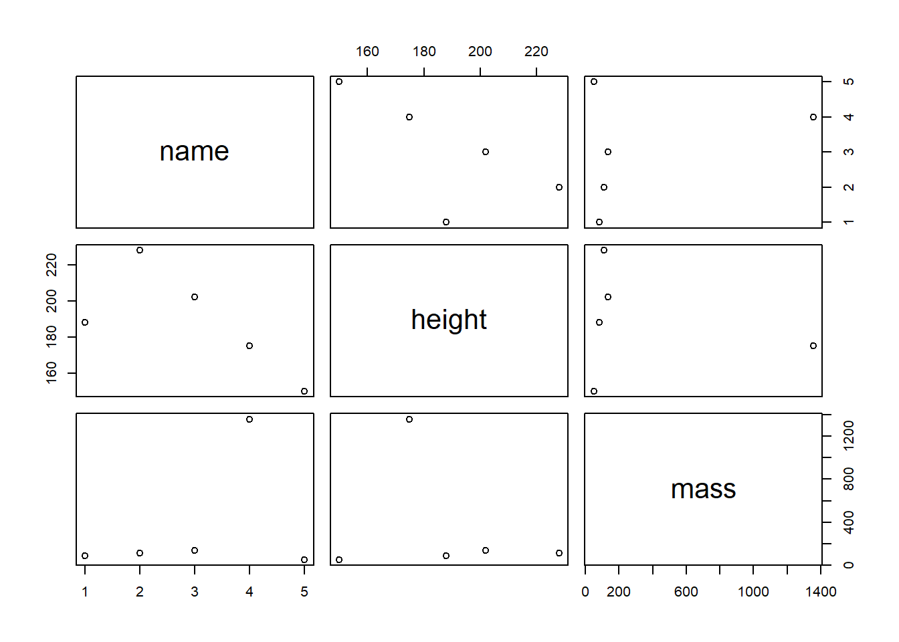

7 Tutorial: Data management with tidyverse
After working through Tutorial 7, you’ll…
- know the advantages of the
tidyversevs. Base R - know about different formats of tabular data
- understand what packages are included in the
tidyversemeta-package - know how to do data modifications and transformations with
dplyr
7.1 Why not stick with Base R?
You might wonder why we’ve spent so much time exploring functions in Base R to now learn data management with tidyverse. After all, data management can also be done in Base R, can’t it? I personally recommend that all R beginners should work with the tidyverse as early as possible. There are three reasons supporting my argument:
- Ease of use: The
tidyverseis very accessible for R “beginners”, i.e. its syntax is very easy to understand. It allows you to set goals (i.e. what you want to do with your data) and get you working on these goals very quickly. Definitely more quickly than in Base R! - Standard for data management: A few years ago, the
tidyversehas become the de facto standard for data management in R. It is a meta-package, which means that it is a collection of distinct packages that all follow the same design principles to make code reading and writing as simple as possible. For example, all functions are named after verbs that indicate exactly what they perform (e.g. filter or summarize). - Beautiful graphs: With the
tidyverse, all data management steps can be swiftly transferred into beautiful graphs. This is because the most popular graph package in R,ggplot2, is part of thetidyverse.
Are you excited now? Then let’s get started!
7.2 Tidyverse packages
The tidyverse comes with a great arsenal of topic-specific packages and their respective functions. It includes packages for:
tibble: creating data structures like tibbles, which is an enhanced type of data framereadr, haven, readxl: reading data (e.g. readr for CSV, haven for SPSS, Stata and SAS, readxl for Excel)tiydr, dplyr: data transformation, modification, and summary statisticsstringr, fircats, lubridate: create special, powerful object types (e.g. stringr for working with text objects, forcats for factors, lubridate for time data)purrr: programming with Rggplot2: graphing/charting
The most frequently used packages of the tidyverse can be installed and activated in one go (less frequently used packages like haven still need to be installed and activated separately):
install.packages("tidyverse") # install the package (only on the first time)
library(tidyverse) # active the package7.3 Tidy data
Dataframes, which we learned about in Types of objects, are tabular data. However, data can also have other formats, for example as nested, i.e. hierarchical, lists. In communication research, these other data formats are mainly used by social media and their respective APIs (perhaps you have heard of the “JSON” format before).
In our course, however, we’ll focus on tabular data.The same data can be represented differently in tables. We perceive some of these representations as tidy, others as messy. While tidy data principles establish a standard for organizing data values inside a data frame and thus all tidy data look the same, every messy dataset is messy in its own way.
Take a look at the table below. It shows a Starwars data set that comes pre-installed with the dplyr package. Do you feel the tabled data is messy? Why (not)?
## # A tibble: 10 x 3
## name body_feature value
## <chr> <chr> <dbl>
## 1 Anakin Skywalker height 188
## 2 Anakin Skywalker mass 84
## 3 Chewbacca height 228
## 4 Chewbacca mass 112
## 5 Darth Vader height 202
## 6 Darth Vader mass 136
## 7 Jabba Desilijic Tiure height 175
## 8 Jabba Desilijic Tiure mass 1358
## 9 Leia Organa height 150
## 10 Leia Organa mass 49Overall, this data is messy. It comes with three messy problems:
- This body_feature column comprises information relating to both height and weight, i.e. both variables are stored in a single column.
- As a result, the value column is reliant on the body_feature column; we can’t tell the stored values apart by merely looking at the value column. We always need to check the body_feature column.
- Consequently, we have issues with vectorized functions (remember, in R, columns in data sets are vectors): We can’t, for example, use the mean() function on the value column to determine the average weight of the Star Wars characters since the height values are also stored there.
What do you think of this table? Is it messy?
## # A tibble: 5 x 3
## name height mass
## <chr> <int> <dbl>
## 1 Anakin Skywalker 188 84
## 2 Chewbacca 228 112
## 3 Darth Vader 202 136
## 4 Jabba Desilijic Tiure 175 1358
## 5 Leia Organa 150 49This table looks tidy! Tidy data is a standard way of mapping the meaning of a dataset to its structure. We determine whether a dataset is messy or tidy depending on how rows, columns and tables are matched up with observations, variables and types. We consider a table tidy when it follows the following golden rules:
- Columns: Every column is one variable.
- Rows: Every row is one observation.
- Cells: Every cell contains one single value.
| Image: The tidy data principle (Source: R for Data Science) |
 |
In messy data sets, on the other hand…
- Column headers are values, not variable names.
- Multiple variables are stored in one column.
- Variables are stored in both rows and columns.
- Multiple types of observational units are stored in the same table.
- A single observational unit is stored in multiple tables.
Why should you be concerned about tidy data organization?
There are two major advantages:
- When you have a consistent data structure, it is easier to learn the respective tools that work well with this data structure.
dplyr,ggplot2, and all the othertidyversepackages are designed for working with tidy data. - Putting variables in columns makes R’s vectorized nature shine. The majority of built-in R-functions (like the mean() function) works with vectors of values. As a result, the tidy reorganization of data seems only natural for a good work flow in R.
If you have been working mainly with survey data, then you will already be familiar with these basic rules, as data export from survey software usually follows these principles. However, “real-world” data from databases or social media often does not follow these principles. That’s why it’s sometimes true to say that 80% of data analysis is spent on cleaning and transforming data.
7.4 The pipe operator
Truly, dplyr is my favorite tidyverse package (even more so than ggplot2, which we’ll cover later!). It allows you to perform powerful data transformations in just a few simple steps.
To this end, dplyr relies on the pipe operator (%>%).4 The %>% operator allows functions to be applied sequentially to the same source object in a concise manner, so that step-by-step transformations can be applied to the data. Therefore, we always call the source object first and then add each transformation step separated by the %>% operator. Let’s illustrate this concept with an example. We’ll use the Starwars data set that you are already familiar with.
starwars_data %>% # First, we define the source object, i.e. the data frame that we want to transform, followed by the pipe operator
plot() # Second, we specify which function should be performed on the source object, here: scatterplot
Now, that’s not very impressive. We could do the same in Base R like this:
plot(starwars_data)
However, dplyr gets really impressive when you chain functions sequentially. You can apply certain selection criteria to your data and plot it in one go. For example, we might exclude the variable name from our scatter plot, since it’s not a metric variable anyway. Also, we might want to look only at those Starwars characters taller than 170 cm. Let’s try it in a single run!
starwars_data %>% # Define the source object
select(height, mass) %>% # Keep only the height and mass column
filter(height > 170) %>% # Filter all observations that are taller than 170cm
plot() # Plot!
Now try to do the same in Base R:
plot(starwars_data[starwars_data$height>170,]$mass~starwars_data[starwars_data$height>170,]$height, xlab="height", ylab="mass") The Bse R code is longer, more nested, and not as readable as the code written in dpylr. And the more selection criteria and functions you need to implement, the worse it gets. For example, imagine you would also want to exlude Starswars characters with a mass bigger than 1200kg. Peace of cake with
The Bse R code is longer, more nested, and not as readable as the code written in dpylr. And the more selection criteria and functions you need to implement, the worse it gets. For example, imagine you would also want to exlude Starswars characters with a mass bigger than 1200kg. Peace of cake with dplyr:
starwars_data %>%
select(height, mass) %>%
filter(height > 170) %>%
filter(mass < 1200) %>%
plot() 
7.5 Data transformation with dplyr
dplyrcomes with six main functions:
select: select variables by column by columnfilter: filter observations row by rowarrange: sort data in ascending or descending ordermutate: calculate new variables or transform existing onessummarize: summarize variables (e.g. mean, standard deviation, etc.)group_by: group the data by one or more variables
More tutorials will be posted here!
7.6 Take-Aways
- Tidy data: is a tabular in which each column represents one single variable, each row represents a single observation and each cell contaon only one single value
- Pipe operator: %>% is used to chain functions and apply them to a source object. We call these chains of functions pipes
- dplyr functions: there are six main dplyr functions that you should know of:
select,filter,arrange,mutate,summarize, andgroup_by
7.7 More tutorials on this
You still have questions? The following tutorials & papers can help you with that:
To be precise, the pipe operator was introduced to R with the package magrittr, not with
dplyr. Nowadays, the %>% operator can be used outside the tidyverse package if magrittr is installed and loaded: library(magrittr).↩︎